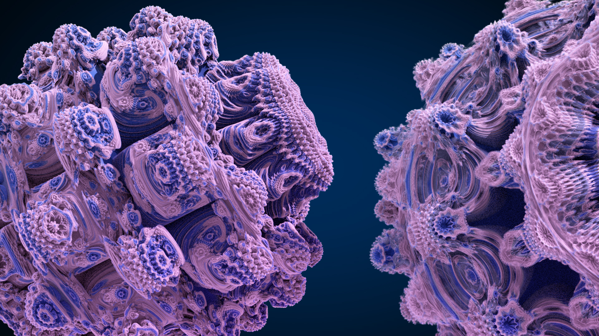
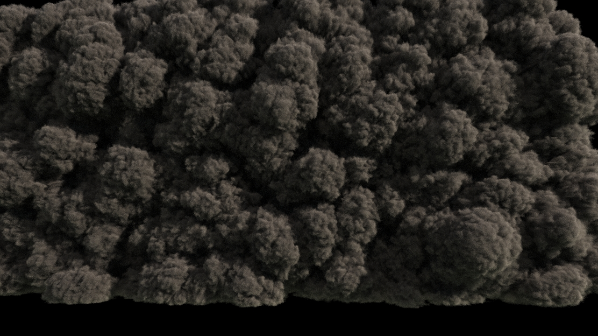

Personal Info
Name:Yangping Liu
Location:China
Age:27

Skills
5 years of Programming/VFX experience
Skills:C++/Python/Lua/javascript
Math:Numerical Analysis
DCC API:Katana/Houdini/Maya
Other API: Arnold/Alembic/OpenVDB/OpenEXR/Django...
SomePlugins:
>> vdbFromParticles for Katana/Arnold << For particles volume rendering in Katana
>> Muster Plugin << NetworkRendering for Katana/Houdini
>> Instance Plugin << Support Houdini/Maya points create instances in Katana
>> TCP RendererCmdController << some commands that can control the linux's renderer clients
>> Parallax Mapping Shader << Mantra/Arnold
>> H2M << Rendering Houdini attributes in Maya
>> UniformScatter << Scatter points in maya create forest
>> Large Scripts for Maya/Katana<<
......